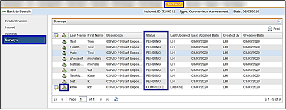

Reviewing Completed Surveys in the Incident Tab
Use the Surveys option to track the survey status and view a completed survey.
- Click Surveys in the left menu.
This displays the list of participants included in the incident that have a survey(s) to complete. - The Status column displays "Pending" or "Complete".
- Click the Jump to Chart icon to access the participant’s medical record.

After reviewing the survey(s), you may want to use the Temperature and Symptom Tracker survey.